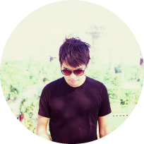
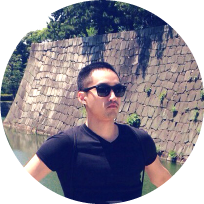

驚喜製造
一個在食衣住行育樂上
產生各種浪漫畫面的體驗製造商
以原創形式的快閃活動點燃你全新小宇宙
產生各種浪漫畫面的體驗製造商
以原創形式的快閃活動點燃你全新小宇宙
是城市缺乏驚喜，還是缺乏發現的人?
我們只知道如果對生活有更多想像，就捲起袖子讓它們實現。
各種期間限定的POP-UP STORE/EVENT
將是我們向城市發聲的管道
以真誠的想像力自娛娛人製造驚喜
讓城市以有機的異變予以回應
我們這樣相信，因為我們都值得把日子過得更有趣
我們只知道如果對生活有更多想像，就捲起袖子讓它們實現。
各種期間限定的POP-UP STORE/EVENT
將是我們向城市發聲的管道
以真誠的想像力自娛娛人製造驚喜
讓城市以有機的異變予以回應
我們這樣相信，因為我們都值得把日子過得更有趣
驚喜，無所不在，只要我們渴望它存在。
是城市缺乏驚喜
還是缺乏發現的人?
我們只知道如果對生活有更多想像
就捲起袖子讓它們實現。
各種期間限定的POP-UP
STORE/EVENT
將是我們向城市發聲的管道
以真誠的想像力自娛娛人製造驚喜
讓城市以有機的異變予以回應
我們這樣相信
因為我們都值得把日子過得更有趣
還是缺乏發現的人?
我們只知道如果對生活有更多想像
就捲起袖子讓它們實現。
各種期間限定的POP-UP
STORE/EVENT
將是我們向城市發聲的管道
以真誠的想像力自娛娛人製造驚喜
讓城市以有機的異變予以回應
我們這樣相信
因為我們都值得把日子過得更有趣
驚喜，無所不在
只要我們渴望它存在。
- THE TEAM -

陳心龍
製作人 / 策展人 / 浪漫份子
大學念海洋工程，從事娛樂產業，後至倫敦學創業管理，擅長整合形式的體驗設計。與其說是具有創作的靈魂，還不如說有著純粹想讓美好事物發生的熱情吧。
『想像的到的事情交給吸引力法則；
至於那些想像不到的就交給我們吧！』

林業軒
旅人 / 行銷人 / 美食愛好者
役畢到英國念行銷，在那之前學的是農業經濟。喜歡在各種不同的領域中找到交集並跨界合作。現在，致力讓城市往更有趣的方向滾動。
『滾動吧，城市！』